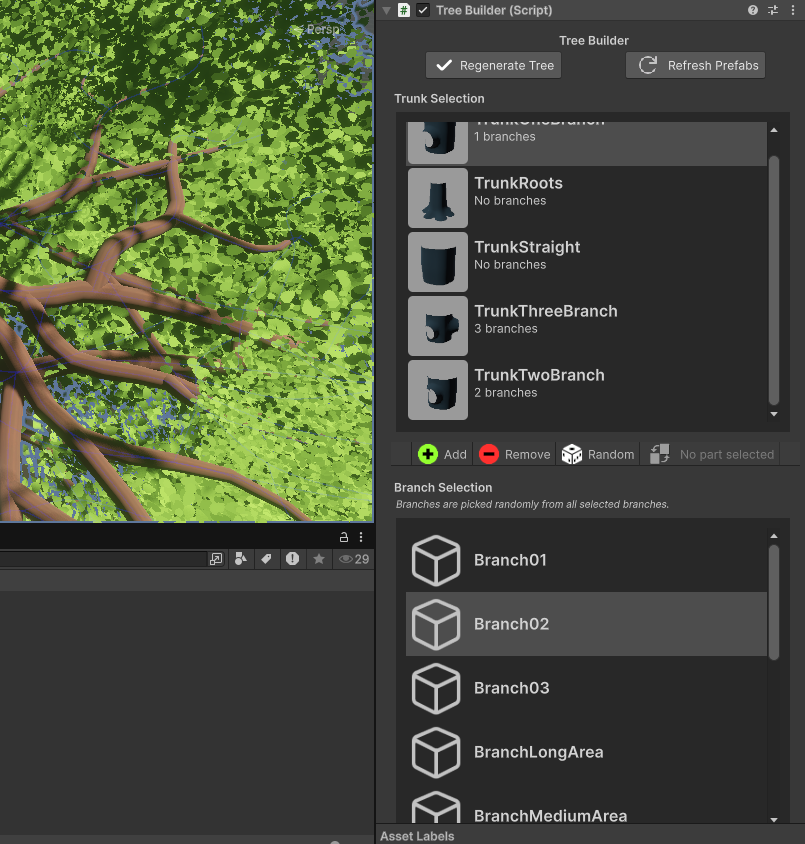
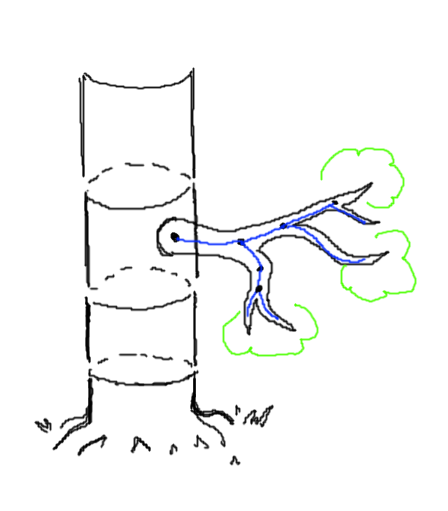
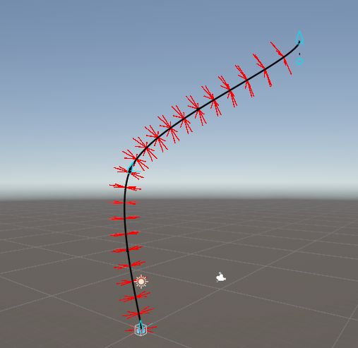

Branch by Branch
DemoAbout
'Branch by Branch' was initially started as my last course project. This game was nominated for the SAGA-award (Skövde Academic Game Award)! 'Branch by Branch' is a game where you climb up an impossibly tall tree, by building your path with wooden planks. All the way up to the moon - branch by branch.
Info

Ongoing

Role: Programmer, 2D-Artist

Group size: 4

Time frame: 12 weeks

Engine: Unity (C#)
What I Worked On
- - Implementation of UI elements
- - Tools for building the level
- - Inventory
- - Parts of the first person player controller
- - All 2D assets
Tree Builder - The level editor tool
For 'Branch by Branch' we quickly realised that building the level was going to be difficult. The whole level is one large tree, with many parts stacked on top of each other.
This meant that if we wanted to insert something in the middle of the tree, everything above it needed to be moved as well.
This substantially slowed down iteration time for the level design, and was a problem that needed to be solved.
So that's what I did!
To solve this issue, I created a level editor for the sole purpose of creating a large tree - a tool called 'Tree Builder' (A very creative name indeed!).
The finished tool looked like this:

The level consisted of three types of parts: 'Trunks', 'Branches', and 'Leaves'. The tree was segmented into different trunk parts where each trunk owns a number of branches, and each branch owns a number of leaves, placed where the branches end.

To solve the initial design problem, the tool allows for the designer to freely move around these different segments, which in turn automatically updates the rest of the tree. The tool also allows for adding, removing, replacing and inserting different parts. To make this inuitive for the user of the tool, the user can either use the tool's UI, or simply delete a segment in the Unity scene view. The tool can detect this, and automatically updates the rest accordingly.
The Branches
Since the game was built around climbing branches, we needed a way to construct a lot of them with different variations. To solve this I created another tool. This tool used Unity's spline system as a base for editing the branches, and simply constructed the new branch mesh around the spline skeleton.

The mesh was constructed as rings of vertices, extruded a certain distance from the spline skeleton. The rings are shown in the screenshot above, with red lines pointing out to each vertex. These vertices were then connected by triangles, forming the final mesh. By changing the distance of the vertices from skeleton, the branches could get thinner further out. Furthermore, by applying noise to the extruded distance, a more natural appearence could be achieved.
What I Learned
- - How to build tool that actually help save time
- - Complex procedural mesh generation
- - UI Design and using different methods to make it efficient.